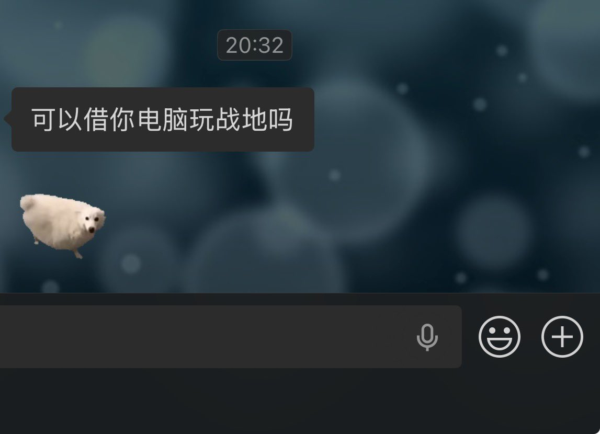

Siper
@Siperistic
@Suzushiro_Rein 俺也，很不喜欢别人动我的东西，但是有人要找我借用我还是会同意哎

Kaze
@Suzushiro_Rein
我是一个很讨厌别人用我东西的人 一切东西
桌子椅子 某些账号 用品 我对自己的东西独占欲极强 我最多可以接受我在场的时候你借用一下 但是没办法接受我不在的时候被别人用
我不喜欢借用别人的东西 也不喜欢别人借用我的东西 我会感觉我的私人空间被侵犯了 非常非常难受 一般这个时候我就要骂人了😋 https://t.co/M8m9JobEdh